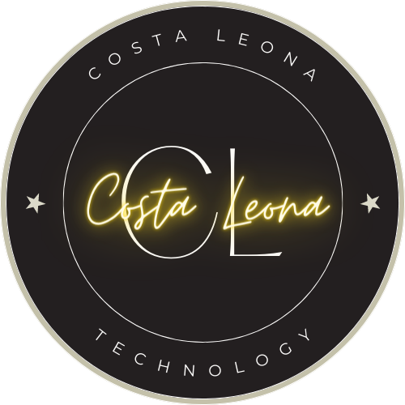
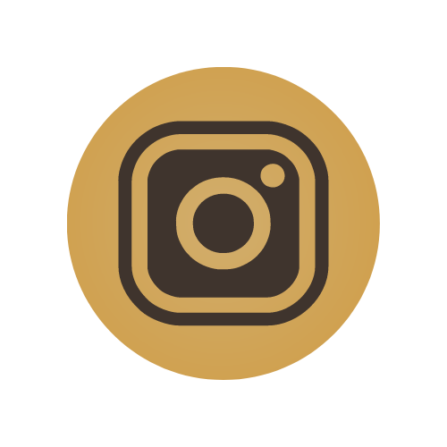

Technology
Costa Leona

Est. 2023


Welcome to my store!
Gadgets have made our lives pleasurable and comfy. Starting from the summer to the winter season, we are making ourselves with AC and room heaters. Some of the other gadgets include a dryer hair straightener. You can’t be able to find a single house without these gadgets. Devices do help in saving a lot of space. In earlier days, there were telephones, where one needed to sit in one place and talk, but now with smartphones, one can travel around and talk wherever. Some other gadgets meant for fun, like iPod, Mp3, PlayStation, etc., have always been our favourite. These things are only possible because of modern technology. The usage of these gadgets brings closeness and smile to the family members. They have become essential since they have managed boredom and loneliness in our daily lives. Though technology and widgets may be helpful if made an addiction, they can be harmful. Thus to avoid addiction to it, you can set a time limit.
Thus, we need to understand that technology and gadgets make our lives easier. Therefore, we should not become addicted to them. People nowadays tend to have many devices, and they are obsessed with them, which is not a healthy sign. We don’t have any control and keep staring at the display as the brightness from the screen causes distress which is not beneficial for us. Hence I am concluding that if we use the technology in a good way, we’re all good, use it in a wrong way no wonder you in trouble.
" People don't want gadgets, They want services."
- Jeff Bezoz.
'
Contact me at:

673-C Guillermo St. Gagalangin Tondo Manila.
0993 801 6105
28-1028-1129
Copyright © 2023 by Ma. Erlyn O. Crisostomo | All rights reserved.